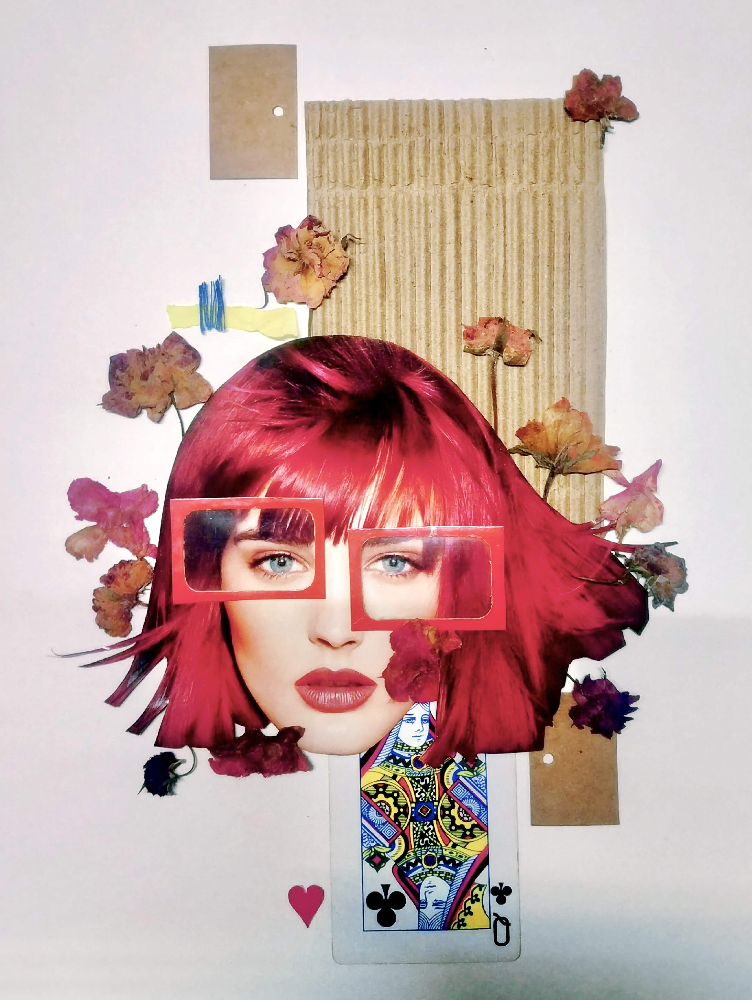
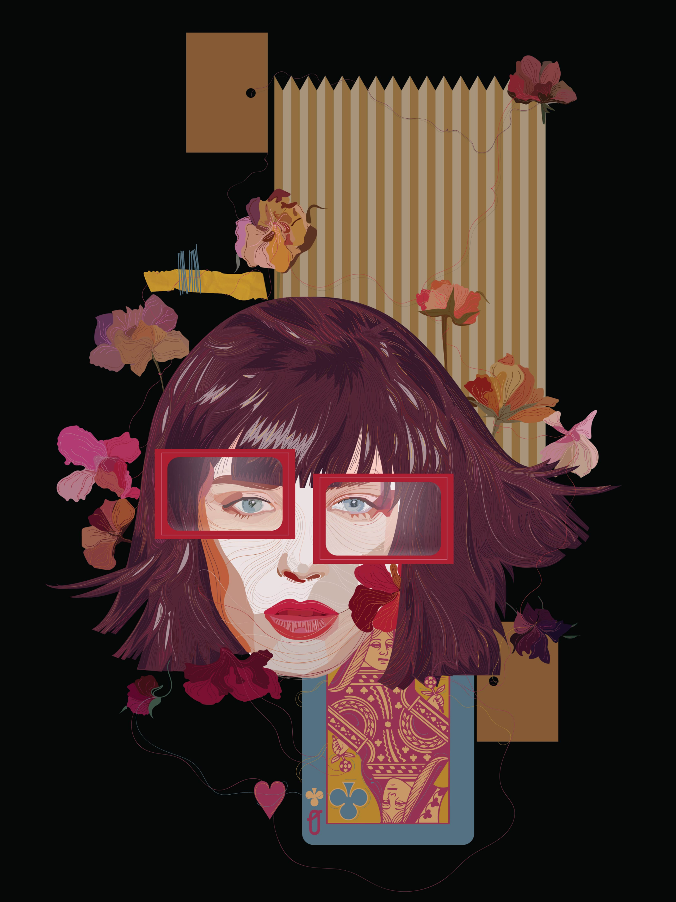

Personal Work
Experimental
Collage explorations: magazine cutouts, dried flowers and card scraps, arranged into a composition. I then rebuilt the same layout as a vector illustration in Illustrator, to see what changes when texture becomes digital.